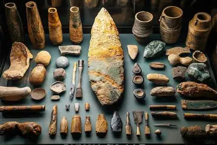
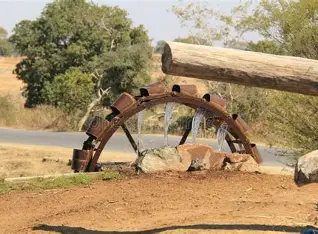
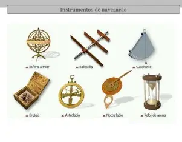
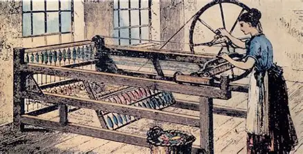
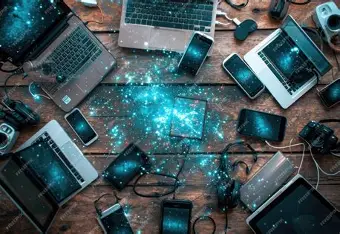
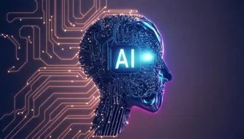

GRANDES ERAS

Pré-história
Pedras, fogo, lanças e técnicas de sobrevivência ampliaram as capacidades humanas e marcaram os primeiros passos da tecnologia.

Antiguidade
Roda, sistemas de irrigação, escrita, matemática, arquitetura e grandes obras transformaram cidades e sociedades.

Idade Média
Novas técnicas agrícolas, instrumentos de navegação, papel, impressão e avanços científicos ajudaram o conhecimento a viajar.

Revolução Industrial
Vapor, fábricas, ferrovias e produção em escala aceleraram o transporte, a comunicação e a transformação das cidades.

Era Digital
Eletrônica, computadores, internet e dispositivos móveis fizeram da informação um dos principais motores da sociedade.

Século XXI
Inteligência artificial, robótica, computação em nuvem e biotecnologia ampliam novamente os limites do que podemos criar.
E • O • QUE • VEM • DEPOIS?
“A evolução tecnológica não é apenas sobre máquinas. É sobre o que fazemos com as novas possibilidades.”
-
01
Conectar
Tecnologias aproximam pessoas, cidades, serviços e conhecimentos.
-
02
Automatizar
Máquinas assumem tarefas repetitivas e ajudam em decisões complexas.
-
03
Transformar
Novas ferramentas mudam trabalho, cultura, educação e a maneira de viver.